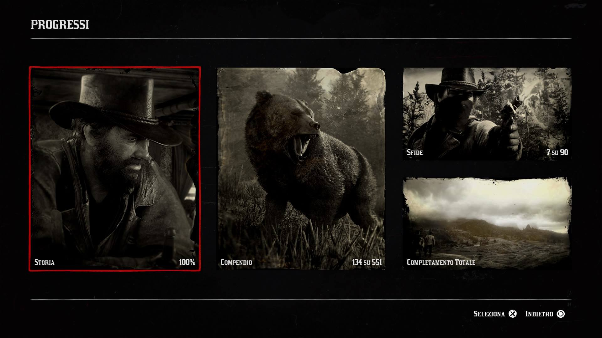

Red Dead Redemption 2 è un gioco d'azione-avventura ambientato nel 1899, che segue le vicende di Arthur Morgan, un membro della banda di Van der Linde. La storia si sviluppa in un periodo di cambiamento, in cui l'era del selvaggio West sta lentamente giungendo al termine.
La banda, guidata da Dutch Van der Linde, è composta da vari membri tra cui Arthur, il suo compagno di lunga data, John Marston (il protagonista del primo Red Dead Redemption), e altri personaggi chiave. La storia inizia quando la banda si rifugia in una regione remota dopo un colpo andato storto. Man mano che si susseguono vari eventi, la banda si trova costantemente a dover sfuggire dalle autorità e da altri nemici, mentre Dutch cerca di mantenere la sua visione di libertà, ma inizia a perdere il controllo della situazione.
Arthur, protagonista principale, è un uomo leale ma che inizia a mettere in discussione le scelte di Dutch, soprattutto man mano che il gruppo si trova coinvolto in azioni sempre più violente e moralmente dubbie. Nel corso del gioco, Arthur sviluppa una riflessione sulla sua vita e le sue scelte, affrontando temi come la redenzione, la lealtà e la corruzione.
Nel finale, Arthur si trova a dover scegliere tra continuare a seguire Dutch o cercare di fare la cosa giusta. La sua storia si intreccia con quella di John Marston, il quale, nonostante le difficoltà, finirà per essere il protagonista del primo Red Dead Redemption, dove le sue azioni e il suo destino sono influenzati dalla fine della banda.
In sintesi, Red Dead Redemption 2 è una storia di perdizione, speranza e lotta per la sopravvivenza, con forti temi di cambiamento, lealtà e morale, mentre il mondo attorno ai protagonisti si evolve e cambia irreversibilmente. Che ne fanno uno dei gichi migliori, se non proprio il migliore di sempre.
|  |